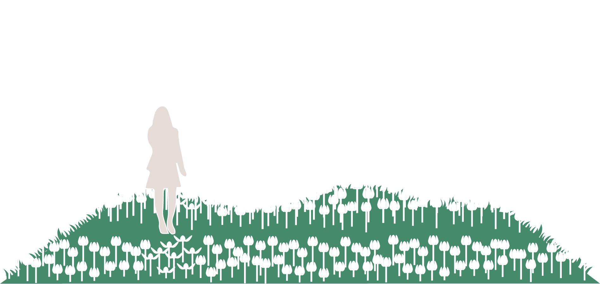
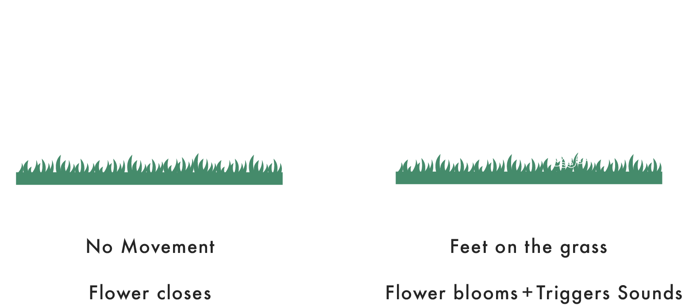
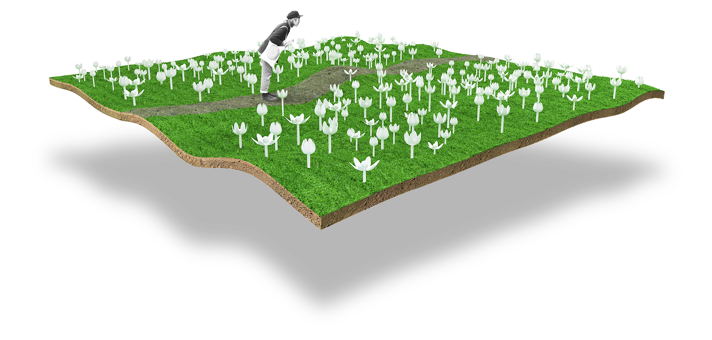

OVERVIEW
Inbloom is an interactive garden that builds a connection between urbanites and nature.
Role:
IOT and visual design
Medium
Installation
Date:
2017
INSPIRATION
Nature is the greatest design. Everything I create is inspired by something that exists around me. Flowers blooming is a part of nature. I want to use technology to let people control blooming. Participants will become part of the natural system and are joined to this experience.INTERACTION
In this project, the 3d printed flowers will respond to movement. People can see the blooming process with the naked eye. It also triggers various sounds of nature.GOAL
The main goal of Inbloom is building connections through interactivity. It aims to demonstrate that electronics can have a new aesthetic, and make spaces more playful. Inbloom can be applied to many scenarios and exhibitions.Proof of Concept
People walk in the room to interact with Inbloom. The people walk, where the 3d printed flowers bloom.
Task Flow
Prototype
Technical Research